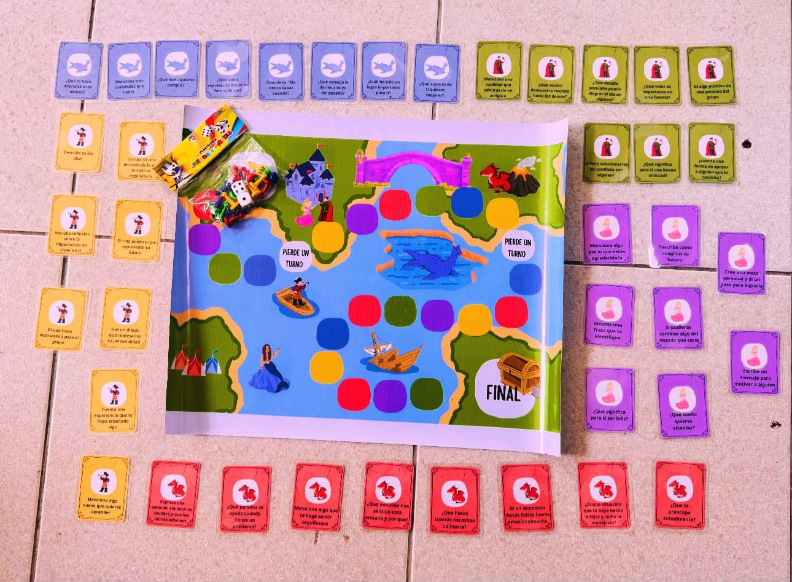

EL CAMINO DEL AMOR PROPIO
Un viaje para conocerme,
valorarme y
creer en mí.
PRODUCTO FINAL
🎯 Objetivo General
Fortalecer la autoestima, el autoconocimiento y la expresión emocional mediante un juego
didáctico que promueva la reflexión
y
el desarrollo socioemocional.
📌 Objetivos Específicos
- Reconocer emociones.
- Fomentar el autoconocimiento.
- Fortalecer la autoestima.
- Promover la convivencia.
- Desarrollar pensamientos positivos.
🛠️ Materiales
- Tijeras.
- Impresiones de tarjetas y tablero.
- Laminado y plastificado del material.
- Cartulina de base para el tablero.
❝ Conocerme, valorarme y creer en mí es el inicio de mi mejor camino. ❞